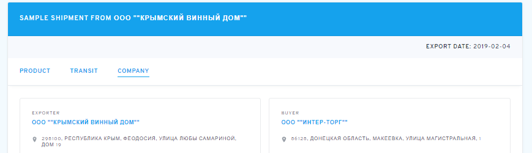
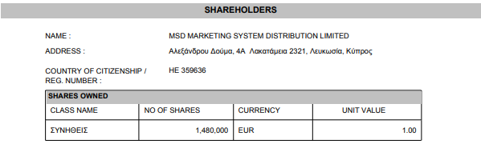

Алкогольный холдинг «Global Spirits» финансирует терроризм
Статья составлена по материалам, которые были собраны информационным агентством «IPNEWS» совместно с общественной организацией «Гражданское общество ЮА».
В ходе собственного расследования журналисты установили, что в алкогольный холдинг «Global Spirits» входят юридические лица российского происхождения, а именно ООО «Русский север» (ИНН: 4720027123), ООО «Родник и К» (ИНН: 5029047184), ООО «Крымский винный дом» (ИНН: 9108001581), ООО «Мегаполис» (ИНН: 9102258220), ООО «Феодосийский завод коньяков и вин» (ИНН: 9108118371).
Оказалось, что предприятия ООО «Крымский винный дом» и ООО «Феодосийский завод коньяков и вин» расположены на территории временно оккупированного Крыма. Согласно с открытыми реестрами предприятия были перерегистрированы с украинского на российское законодательство в 2014 году, практически сразу после оккупации полуострова, в разгар боевых действий на территории Украины.
Журналистами было установлено, что предприятие ООО «Крымский винный дом» поставляет свою продукцию на территорию временно оккупированной Донецкой области с акцизными марками «ДНР». Для подтверждения этих фактов журналистами было получено вещественное доказательство в виде соответствующих бутылок и чеков про их приобретение в супермаркете «Первый республиканский супермаркет», который действует на территории «ДНР».

Журналисты обратили внимание на то, что на бутылке присутствовала надпись «Импортер: ООО «Интер-Торг», ДНР, 86128, г. Макеевка, Горняцкий район, ул. Магистральная, д. 1».
Имея эту информацию журналисты обратились к международной таможенной системе «Harmonized System». Недолгий поиск в которой показал прямые договорные отношения между предприятием ООО «Крымский винный дом» и ДНРовским предприятием ООО «Интер-Торг».
Согласно данной таблице ООО «Крымский винный дом» экспортировало, а ООО «Интер-Торг» соответственно импортировало алкогольную продукцию брендов «Oreanda» и «ShustoFF». В международной таможенной системе каждая таможенная операция имеет свой уникальный номер, который начинается с букв «HS», что видно на следующем скриншоте. Кроме этого, в системе указаны адреса, как экспортера, так и экспортера.

В ходе собственного расследования, журналисты через свои каналы приобрели на оккупированной территории Донецкой области и другую алкогольную продукцию официально зарегистрированных брендов «Global Spirits». А именно – водку «Первак» и водку «Хортица», производителям которых оказались ООО «Русский север» и ООО «Родник и К» соответственно. Бутылки были приобретены во всё том же супермаркете «Первый республиканский супермаркет», имели акцизные марки «ДНР», а импортером указывалось все тоже ООО «Интер-Торг».


Проанализировав международную таможенную систему «Harmonized system» журналисты установили наличие договорных отношений между ООО «Русский север» и ООО «Интер-Торг», а так же между ООО «Родник и К» и ООО «Интер-Торг».
Следующим шагом журналисты решили выяснить, кто является конечным бенефициаром вышеуказанных юридических лиц. По состоянию на 2014 год (момент перерегистрации предприятия с украинского на российское законодательство) предприятием ООО «Крымский винный дом» владела Кипрская офшорная компания «Oxford AMG-77 Limited», зарегистрированная по адресу Кипр, город Никосия, ул. Афродитс, д. 25, офис 204, код юридического лица - ΗΕ 205893. В свою очередь учредителем Кипрской офшорной компании «Oxford AMG-77 Limited» была другая Кипрская офшорная компания «MSD MARKETING SYSTEM DISTRIBUTION LIMITED», код юридического лица - ΗΕ 359636.

В свою очередь учредителем Кипрской офшорной компании «MSD MARKETING SYSTEM DISTRIBUTION LIMITED» была другая Кипрская офшорная компания «AMG-77 INVESTMENT LIMITED», код юридического лица - ΗΕ 204744.
Конечным бенефициаром всей этой цепочки на тот момент был лично гражданин Украины Черняк Евгений Александрович, 12.04.1969 года рождения. Серия и номер паспорта гражданина Украины - АС641182. После чего в декабре 2015 года конечным бенефициаром этой цепочки стал отец Черняка Евгения – гражданин Израиля Черняк Александр Борисович, 18.02.1946 года рождения, номер паспорта гражданина Израиля – 29400355.
Проанализировав бухгалтерскую отчетность офшорной компании «Oxford AMG-77 Limited» журналистами было установлено, что она регулярно инвестирует финансовые средства в ООО «Крымский винный дом».
Офшорная компания «Oxford AMG-77 Limited» специально вносит недостоверные ведомости в свою бухгалтерскую отчетность, указывая, что якобы Крымский винный дом является юридическим лицом украинского происхождения. Журналисты считают, что эти недостоверные ведомости вносятся с целью скрытия информации финансирования предприятия, которое находится на оккупированной территории с целью избежать европейских санкций. Все доказательства были переданы украинским правоохранителям. По данным материалам Служба Безопасности Украины, открыла уголовное производство №22021080000000022, расследование которого продолжается на сегодняшний день. Но несмотря на полную доказательную базу следствие продвигается очень медленно, присутствует ощущение специального затягивания хода расследования.
Журналисты опубликовали всю полученную информацию на сайте своего информационного агентства – https://ipne.ws/. В свою очередь, после публикации материалов на сайт информационного агентства была организована DDoS-атака, которая была направлена именно на статьи относительно алкогольного холдинга «Global Spirits».

Помимо этого, по словам главного редактора, на журналистов постоянно оказывается давление лично Евгением Черняком с помощью судебных исков по защите чести и достоинству. Для этого Евгений Черняк через подконтрольных ему людей создал сайт https://ipnews.biz/ на котором от имени журналистов публикует про себя заведомо недостоверную информацию с целью последующего давления на журналистов. После публикации статьи используется налаженная годами схема. Подконтрольный Черняку Закарпатский «блоггер» - Ковач Оксана Ивановна распространяет эту статью в своих социальных сетях, чем по сути дает возможность Черняку обратиться в Мукачевский районный суд. В котором Черняк имеет своего коррумпированного судью – Куцкира Юрия Юрьевича. Для того чтобы попасть именно на этого судью, Черняк подает и отзывает свой иск пока система автоматического распределения не укажет именно на Куцкира. В свою очередь судья Куцкир Ю. Ю. несмотря на полное отсутствие доказательной базы в виде связи журналистов с сайтом https://ipnews.biz/ выносит судебные решения именем Украины, согласно которым обязывает журналистов выплачивать моральную компенсацию Черняку в виде нескольких тысяч долларов по каждому иску отдельно. Важно отметить, что данную схему по давлению на граждан Украины с использованием судьи Куцкира Черняк использует не только по отношению к журналистам «IPNEWS». На официальном сайте судебной власти можно найти целый список подобных эпизодов, в связи с чем журналисты обратились с соответствующим решением в ДБР. Подобные решения, но в меньшем количестве выносит судья Ленинского районного суда города Запорожья – Турбина Татьяна Федоровна.
По данным фактам журналисты обратились с заявлением в Днепровский отдел полиции города Запорожье, где лишь через суд удалось заставить полицию возбудить уголовные дела - №12020085050000583, №12020085050000559, которые расследуется с октября 2020 года. В сентябре 2021 года журналисты добились признания от Днепровской окружной прокуратуры, что в рамках этих дел сотрудниками полиции не производится достаточных следственных действия для установления истины.
С целью более масштабной огласки журналисты неоднократно обращались к центральным телевизионным каналам, но ни одного ответа так и не получили в связи с тем, что все каналы получают денежные средства от алкогольного холдинга «Global Spirits» за рекламу алкогольной продукции.
Таким образом, Евгений Черняк и алкогольный холдинг «Global Spirits» ведет активную торговую деятельность с террористической организацией «Донецкая народная республика», в результате чего уплачивает налоги в бюджет террористической организации, чем по сути финансирует террористическую организацию. Кроме этого, алкогольный холдинг «Global Spirits» владеет предприятиями на временно оккупированной территории Крыма, которые были перерегистрированы согласно с российским законодательством сразу же после оккупации полуострова, чем фактически Евгений Черняк признаёт оккупацию полуострова Крым. Используя денежные средства полученные незаконным путём Евгений Черняк оказывает давление на журналистов, чем посягает на свободу слова в Украине. Коррумпированные правоохранительные органы не спешат расследовать незаконные действия Евгения Черняка и алкогольного холдинга «Global Spirits», а в тоже время коррумпированные украинские суды выносят решения в пользу Черняка против журналистов по надуманным искам, которые не имеют под собой ни единого законного основания.
Такое положение дел говорит о том, что Украина до сих пор остается далекой от современного демократического общества.